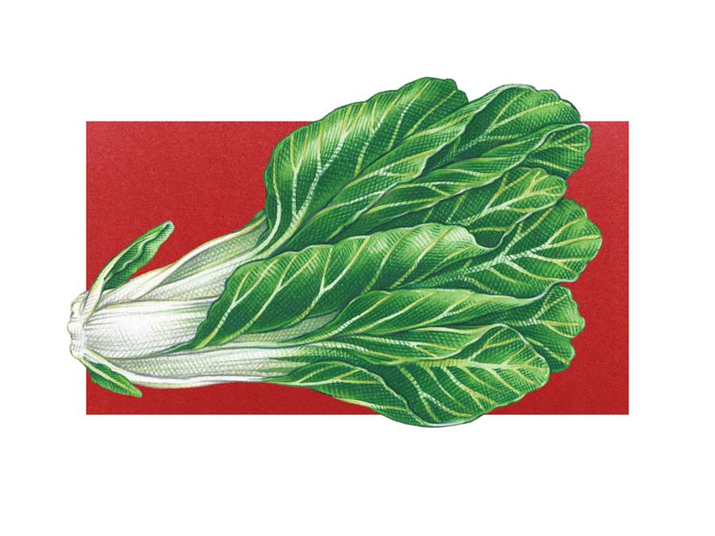
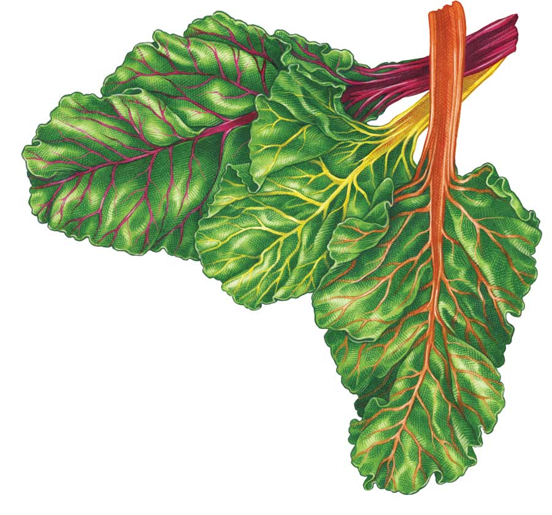

White-stemmed varieties consistently outperform their more colorful counterparts in terms of productivity and bolt resistance.
Brightly colored varieties are the queens of edible ornamentals. Varieties bearing red, pink, yellow or orange ribs are available individually or in pre-packaged mixtures.
Perpetual varieties, which are often called perpetual spinach, have thinner stems and smaller, smoother leaves than larger varieties, and they taste more like spinach. The short, stocky plants work well in small gardens and containers.
Check out our chart for growing swiss chard varieties.
In spring, sow directly in the garden two weeks before your last frost date, or start seeds indoors three to four weeks before your last frost date and set seedlings out just as the last frost passes.
In fall, start seeds about 10 weeks before your first frost date, and set the seedlings out when they are four weeks old.
Prepare a rich, fertile bed by loosening the soil while mixing in compost and a balanced organic fertilizer, applied at label rates. Plant seeds half an inch deep and 3 inches apart. Set out seedlings 12 inches apart. Indoors or out, thin newly germinated seedlings with cuticle scissors instead of pulling them out. Chard seed capsules often contain two or more seeds. If more than one germinates, promptly snip off all but the strongest sprout at the soil line. Gradually thin direct-sown seedlings to 12 inches apart.
Twist off individual outer leaves and compost old leaves that have lost their glossy sheen. Three to five leaves can be picked from mature plants at a time, but be sure to leave the growing crown intact. Frequent picking helps to stimulate the production of new leaves. Rinse leaves with cool water immediately, shake off the excess moisture, and store in plastic bags in the refrigerator for up to four days.
Excess chard is easy to blanch and freeze, just like spinach, and you can dry perfect leaves and use the “flakes” to add color and nutrition to winter soups and stews. Chard stems are sometimes made into fermented pickles, or you can pickle the stems and leaves together with a standard vinegar-sugar brine before sealing the jars in a waterbath canner.
Like other biennial plants, chard produces flowers and seeds in the spring of its second year, after it has been through winter. Chard is only winter-hardy to about 15 degrees Fahrenheit, so in most areas you must dig the plants in fall and replant them in spring if you want to save seed. Through winter, keep the trimmed plants packed in damp sand in your basement or another cool place. Set them out four to six weeks before your last frost date.
Chard is wind-pollinated, so at least six closely spaced plants are needed for good seed set. Look for greenish flowers followed by seed capsules clustered close to the stem. When the stems dry to brown, crush them inside a paper bag, and gather the largest seeds that fall to the bottom. Store them in a cool, dry place. Chard seeds will keep for at least three years, and often longer. If you plant a 10-foot row each year, a packet of seeds will last you three years and bear 10 to 12 pounds of chard each season.
Weed early and often, because young chard competes poorly with weeds. As the plants gain size, they do a reasonably good job of shading out late-season weeds.
Mulch heavily to keep the soil cool and moist, and to reduce splashing of soil onto leaves. Water regularly, because dry conditions tend to make Swiss chard’s flavor harsh.
Color up your garden with trios of bright chards planted in intermittent mounds. Station chard in high-visibility spots near the front of the garden. Create maximum contrast by growing chard in close company with fine-textured plants such as carrots, dill or curly parsley.
Soak seeds overnight in water before planting to ensure strong germination.
Rejuvenate plants in late summer by pulling off old leaves, spreading a little compost over the root zone and drenching with a water-soluble organic fertilizer. They will respond by making a strong comeback in early fall. You can keep picking chard for a few weeks after your first fall frost.
Use shade from taller plants such as sweet corn, tomatoes or sunflowers to filter intense summer sun, which can cause off flavors. Where summers are hot and dry, locate chard on the north or east side of taller plants.
Use a single chard plant as the centerpiece for a small collection of culinary herbs that have been planted together in a broad container.
You can usually twist leaves away from chard plants, but as plants age they push out of the ground a bit, almost like beets. When this happens, it’s better to harvest the leaves with a sharp knife.
For small gardens, consider a perpetual chard or a dwarf variety such as ‘Pot of Gold.’
Chard is two vegetables in one. Cooked chard greens can stand in for spinach in any recipe, and the crisp ribs can be steamed or grilled like asparagus. Or simply chop and cook the greens and ribs together, squeeze out excess water, and use the cooked chard in casseroles, quiches or as a succulent side dish. In addition to being an excellent source of vitamins A and C and several minerals, chard’s abundance of vitamin K makes it especially valuable for maintaining strong bones.
|
 KEITH WARD You can substitute cooked chard greens for spinach in any recipe, and steam or grill the crisp ribs of the plant just as you would asparagus. |
 KEITH WARD In addition to being an excellent source of vitamins A and C and several minerals, chard is also rich in vitamin K, making it a valuable food for maintaining strong bones. |
|